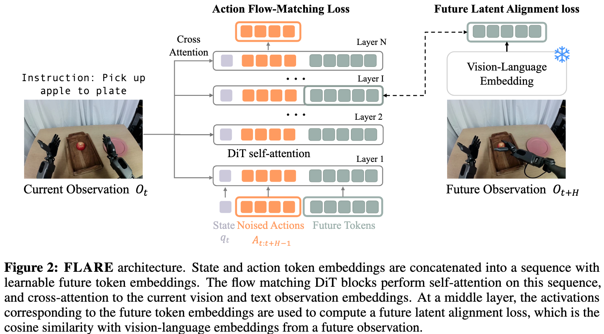
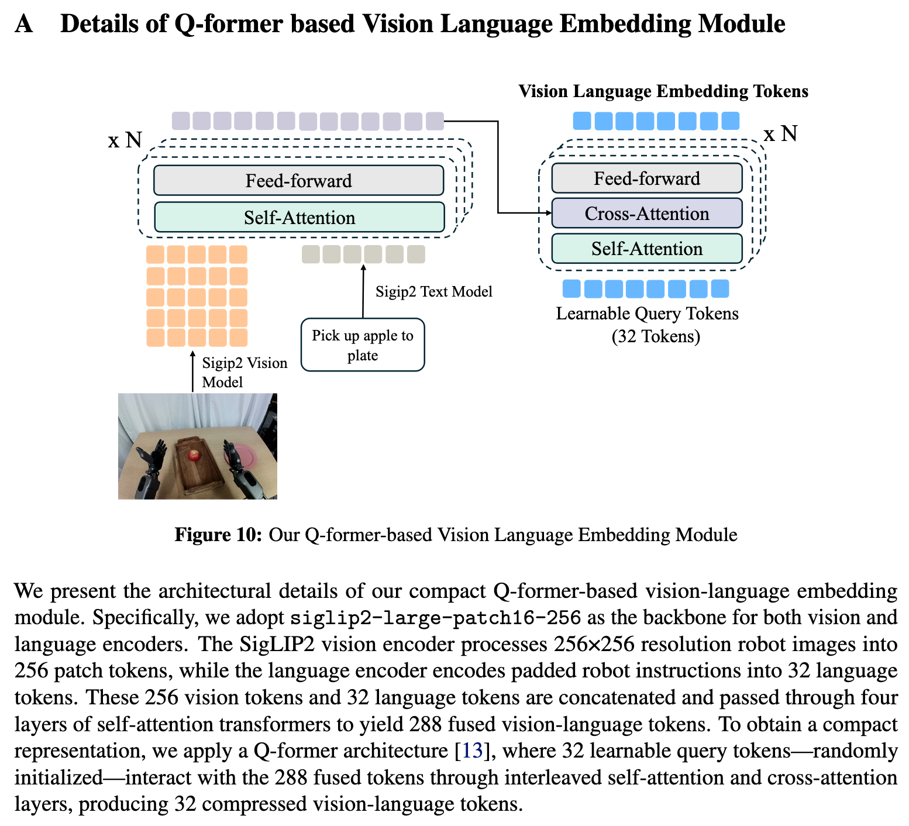
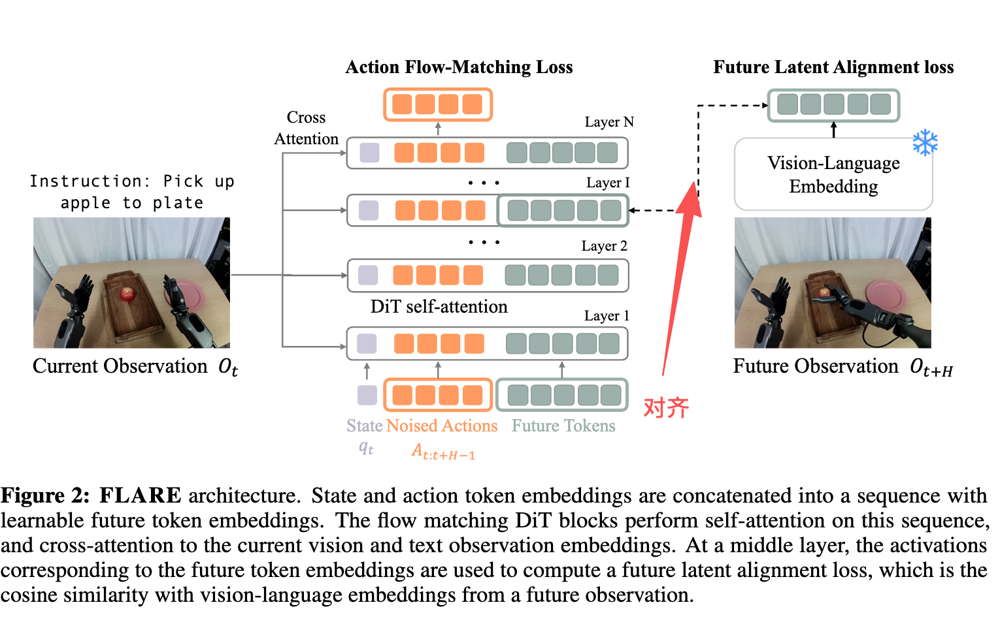
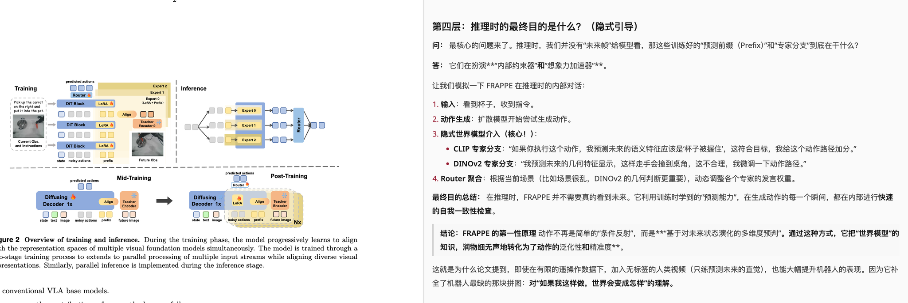
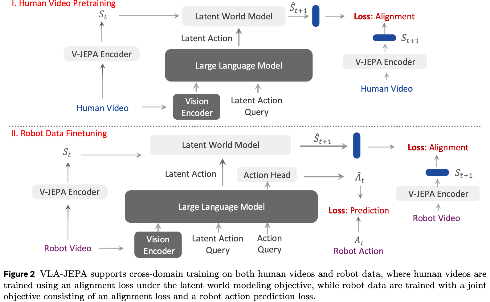

World Model 06
潜空间世界模型：不要急着画未来
显式视频预测很直观，但也很重。FLARE、FRAPPE、VLA-JEPA 和 JEPA-VLA 的共同取向是： 预测未来表征，而不是把每个像素都重建出来。
从像素转向表征
FLARE 通过 future tokens 把 DiT 策略的隐藏状态对齐到未来观察 embedding； FRAPPE 用多种视觉基础模型做未来表征对齐；VLA-JEPA 则用 leakage-free state prediction， 让未来帧只当监督目标，不进入学生路径。



FRAPPE 与 JEPA
FRAPPE 解决的是预测 future observation 时对像素重建和误差积累的依赖； JEPA 风格方法则更激进：目标 encoder 看未来，学生只看现在，用 latent prediction 学动作相关的状态转移。


代码视角
潜空间路线通常在原始 action loss 外加一个 auxiliary alignment loss。 训练时看未来，推理时不需要未来图像，所以部署开销可以很低。
with no_grad():
target_future = target_encoder(future_frames)
hidden = policy_dit(obs, instruction, noisy_action, timestep)
pred_action = action_head(hidden)
future_tokens = future_token_head(hidden)
loss_action = flow_matching_loss(pred_action, action)
loss_future = cosine_or_mse(future_tokens, target_future)
loss = loss_action + lambda_future * loss_future实现重点
- target encoder 要冻结或慢更新，否则模型容易把未来目标也训练塌。
- future tokens 的层位置很关键：太浅学不到任务动态，太深可能干扰动作解码。
- 推理时如果不计算 future embedding，就要确保训练阶段没有把未来信息当输入泄漏。
Insight
对高频控制来说，潜空间未来比像素未来更像“机器人能用的想象”。它牺牲可视化直观性， 换来更低延迟、更少无关背景噪声，以及更容易接入现有策略网络的训练目标。